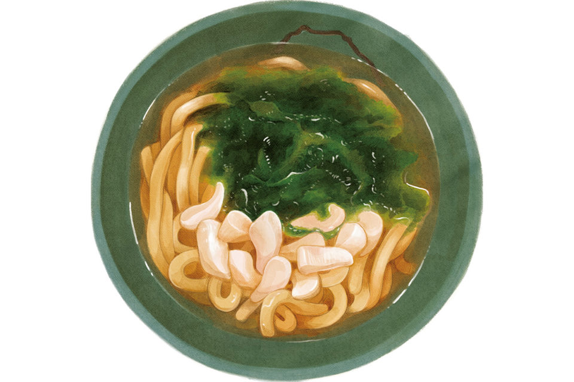
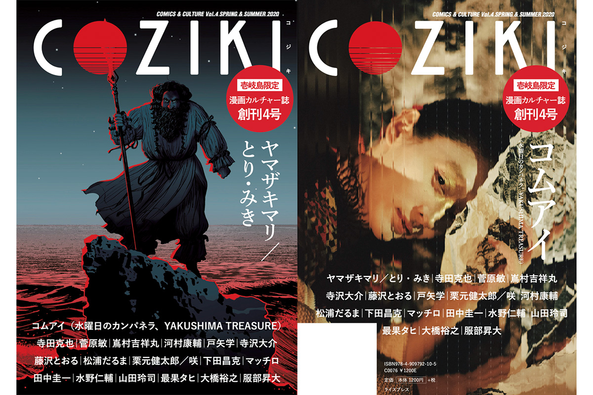
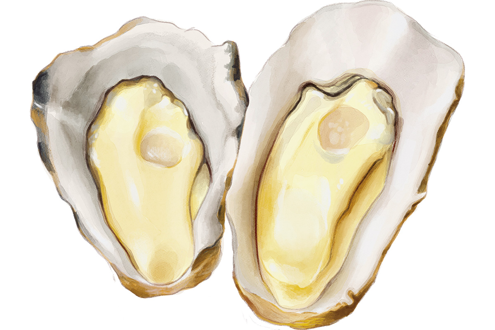

Префектура Нагасаки · Ики · еда
Остров Ики на вкус: устричный удон, говядина ики-гю и маршрут на два дня

Остров Ики в море Гэнкай-нада относится к префектуре Нагасаки, а добираться до него проще всего из Хакаты: час с небольшим на скоростном пароме. Главный редактор японского журнала о гастрокультуре бывал здесь больше десяти раз и составил свой маршрут по острову: от миски удона, ради которой стоит плыть через море, до ночной лапши в портовом квартале.
Остров
Пятый остров из мифа
В «Кодзики», старейшей японской хронике, есть миф о сотворении земли: боги рождают острова один за другим, и Ики в этом рассказе появляется пятым. На острове больше тысячи святилищ и маленьких придорожных алтарей, поэтому его называют островом, где живут боги.
Этот миф вдохновил культурный журнал «Кодзики», который продавался только на Ики. В нём художники, фотографы, писатели и авторы манги придумывали для острова новые мифы. Главный редактор журнала о еде, наш проводник, делал его с 2018 года и к 2020 году приезжал на Ики больше десяти раз.

По его словам, у острова удивительно много достоинств, и одна только еда тянет на отдельную поездку. Рыба и моллюски из моря Гэнкай-нада, говядина ики-гю, местная марка мяса. Ики считается родиной ячменного сётю, а по площади рисовых полей остров второй в префектуре Нагасаки.
Главное
Удон, после которого замолкаешь
Каждый приезд на Ики приносит новые открытия, но сильнее всего редактора поразил удон в «Каки хаус Утимэван». Это устричная хижина на берегу бухты Утимэ, где гости сами жарят себе устрицы и другие морепродукты на углях. Удон он заказал в конце ужина почти машинально.
«Отпил бульон и подумал: что это вообще такое? Насыщенный, густой, в нём будто сконцентрирован весь вкус ракушек. Кого бы я сюда ни привозил, все реагируют одинаково. Обязательно попробуйте его на месте»
главный редактор журнала о гастрокультуре
Бульон для удона Утимэ варят из местных устриц «Тёдзю-гаки», то есть «устриц долголетия», а ещё из полосатого тунца кацуо, водорослей комбу, сушёной мелкой рыбки и грибов сиитакэ. Получается мягкий и глубокий вкус, такой бульон хочется допить до дна. В миску кладут гребешок и морскую водоросль аоса. В 2020 году удон стоил 500 иен.

Устриц выращивают в бухте под святилищем Кодзима. Его называют японским Мон-Сен-Мишелем: святилище стоит на маленьком острове, и к нему можно дойти по дну, когда отступает вода. Устрицы здесь без резкого запаха, с плотным насыщенным вкусом. Кроме них на угли можно взять моллюсков сазаэ, морское ушко, шпажки с моллюсками и мясо.
«Каки хаус Утимэван»
- Адрес
- префектура Нагасаки, Ики, Асибэ, Мороёси-минамифурэ, 111-2
- Телефон
- +81 90-8417-5222
- Часы работы
- 11:00–23:00 (после 17:00 только по предварительной записи)
- Выходные
- среда
- Цены / Вход
- удон Утимэ 500 иен, устрицы 1000 иен за 1 кг
Маршрут
От порта Асибэ до острова Тацуносима
Редактор советует начинать с порта Асибэ на востоке острова. В трёх минутах пешком от причала работает «Умэсима», ресторан при мясной лавке, который держит животноводческое хозяйство. Ики-гю выпускают совсем немного, около 40 голов в месяц, а здесь эту говядину можно попробовать по разумной цене. Редактор рекомендует филейный стейк: сет стоил 3980 иен в 2020 году.
«Умэсима»
- Адрес
- префектура Нагасаки, Ики, Асибэ, Хакодзаки-Накаяма-фурэ, 2604-86
- Телефон
- +81 920-45-3729
- Часы работы
- 11:30–14:30 и 17:30–21:30 (последний заказ)
- Выходные
- среда
- Цены / Вход
- сет с филейным стейком 3980 иен
В 15 минутах на машине стоит музей Икикоку. Так в древности называлось государство на острове. В музее около 2000 находок с раскопок Ики, а восьмиминутный фильм с компьютерной графикой показывает, как жил остров в период Яёй. С верхнего этажа видно почти весь остров.
Музей Икикоку
- Адрес
- префектура Нагасаки, Ики, Асибэ, Фукаэ-Цурукамэ-фурэ, 515-1
- Телефон
- +81 920-45-2731
- Часы работы
- 8:45–17:30 (вход до 17:00)
- Выходные
- понедельник (если это праздник, то следующий день)
- Цены / Вход
- 410 иен
Дальше дорога огибает остров и приводит в порт Кацумото на севере. Отсюда за 10 минут прогулочный катер доходит до необитаемого острова Тацуносима. Пропускать его редактор не советует: изумрудная вода и белый песок пляжа выглядят так, что трудно поверить, что это Япония.
Рядом, в естественной бухте, устроен приморский парк «Ики ирука парк». Здесь можно пообщаться с дельфинами, пожарить барбекю без собственного снаряжения и пройтись по воде на сапборде.
«Ики ирука парк энд ризорт»
- Адрес
- префектура Нагасаки, Ики, Кацумото, Хигаси-фурэ, 2668-3
- Телефон
- +81 920-42-0759
- Часы работы
- 9:30–17:30
- Выходные
- без выходных
- Цены / Вход
- 500 иен
Вечер
Три адреса в Гоноуре
Вечером редактор обычно едет в портовый город Гоноуру, к кварталу у мэрии Ики. Начинает он в «Кадомару» или «Марутацу», а заканчивает лапшой в «Хигэ». Все три заведения стоят в паре минут ходьбы друг от друга.
«Кадомару» это японский ресторан, где готовят из продуктов Ики: говядина ики-гю, рыба, даже паста. Здесь можно сравнить сётю всех семи винокурен острова, дегустация стоила 1500 иен в 2020 году.
«Кадомару»
- Адрес
- префектура Нагасаки, Ики, Гоноура, Гоноура, 9
- Телефон
- +81 920-47-3733
- Часы работы
- 17:30–23:30 (последний заказ)
- Выходные
- нерегулярные
- Цены / Вход
- дегустация сётю семи винокурен 1500 иен
В «Марутацу» собираются местные. Кальмара здесь подают живым, нарезанным тонкими ломтиками: это блюдо отмечено в гиде «Мишлен». Ещё одна причина прийти сюда это «хикитоси», местное блюдо в горшке.
«Марутацу»
- Адрес
- префектура Нагасаки, Ики, Гоноура, Гоноура, 47
- Телефон
- +81 920-47-6607
- Часы работы
- 17:00–23:00
- Выходные
- воскресенье
«Хигэ» это идзакая, которая работает до двух часов ночи. Рамэн на свином бульоне с добавлением куриного редактор считает лучшим завершением вечера.
«Рамэн идеален в самом конце. А если взять к нему мисочку тёртого ямса тороро и макать в неё лапшу, получится вкусная цукэмэн»
главный редактор журнала о гастрокультуре
«Хигэ»
- Адрес
- префектура Нагасаки, Ики, Гоноура, Гоноура, 25
- Телефон
- +81 920-47-0388
- Часы работы
- 20:00–2:00
- Выходные
- воскресенье
Ночлег
Рёкан, где хозяйку зовут достопримечательностью
Для ночёвки редактор выбирает рёкан «Хираяма» в онсэне Юмото на севере острова. Про хозяйку здесь шутят, что она сама место силы. Горячему источнику больше 1500 лет, вода идёт в купальни прямо из скважины, а славится он как источник, помогающий зачать ребёнка. Но главное здесь ужин: свежая рыба и моллюски, пойманные у острова, овощи с собственного огорода без химикатов, тофу Ики и другие местные блюда, и всего этого подают так много, как только можно.
Рёкан «Оку-Ики-но Сэннэнъю Хираяма»
- Адрес
- префектура Нагасаки, Ики, Кацумото, Татэиси-ниси-фурэ, 77
- Телефон
- +81 920-43-0016
- Номера
- 8
- Цены / Вход
- от 16 650 иен с человека с ужином и завтраком (с налогом и купальным сбором)
Утром стоит заехать в Кацумото-ура, рыбацкий квартал на севере. Здесь работает фруктовая лавка «Симодзё», где из сезонных фруктов варят около 40 видов джема в год.
«Купить его можно только здесь, и как подарок он всегда радует»
главный редактор журнала о гастрокультуре
Фруктовая лавка «Симодзё»
- Адрес
- префектура Нагасаки, Ики, Кацумото, Кацумото-ура, 192
- Телефон
- +81 920-42-0231
- Часы работы
- 7:00–20:00
- Выходные
- без выходных
Из сладостей острова редактор называет «Альпы», которые продают только осенью и зимой. Из видов на закат он советует скалу Сару-ива, чей силуэт напоминает обезьяну, и «Они-но асиато», «след демона».
Маршрут
Ики за два дня
На Ики удобно добираться: из Хакаты паромы уходят каждый час. Маршрут редактора выглядит так.
День 1. Порт Хаката, 65 минут на скоростном пароме до порта Асибэ. Обед в «Умэсиме» (3 минуты пешком), музей Икикоку (15 минут на машине), порт Кацумото (30 минут), катер до Тацуносимы и обратно, «Ики ирука парк» (10 минут), ужин в Гоноуре (30 минут): «Кадомару», «Марутацу» и «Хигэ». Ночлег в рёкане «Хираяма» (15 минут).
День 2. Лавка «Симодзё» (11 минут на машине), удон и устрицы в «Каки хаус Утимэван» (22 минуты), порт Асибэ (12 минут) и паром до Хакаты.
Туристическая информация Ики
- Адрес
- префектура Нагасаки, Ики, Гоноура, Хонмура-фурэ, 562
- Телефон
- +81 920-48-1130
- Сайт
- ikikankou.com